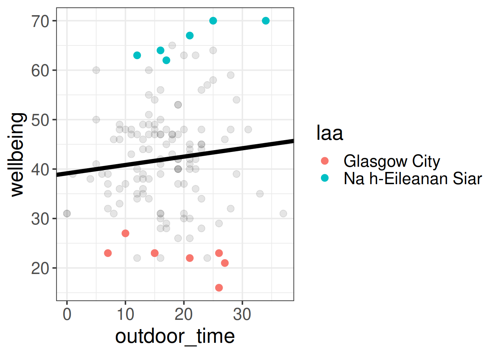
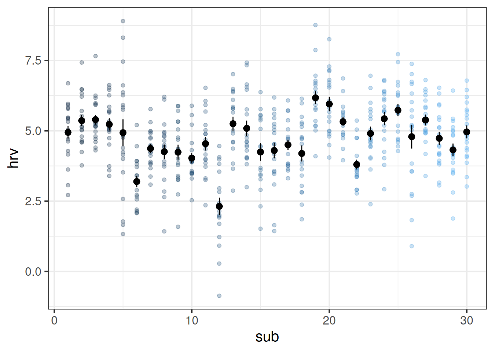

install.packages(c("tidyverse","ICC","lme4","effects","broom.mixed","sjPlot","HLMdiag"))
# the lmeresampler package has had some recent updates. better to install the most recent version:
install.packages("devtools")
devtools::install_github("aloy/lmeresampler")Regression Refresh and Clustered Data
Preliminaries
- Open Rstudio, and create a new project for this course!!
- Create a new RMarkdown document or R script (whichever you like) for this week.
These are the main packages we’re going to use in this block. It might make sense to install them now if you do not have them already.
- tidyverse : for organising data
- ICC : for quickly calculating intraclass correlation coefficient
- lme4 : for fitting generalised linear mixed effects models
- lmeresampler : for bootstrapping!
- effects : for tabulating and graphing effects in linear models
- broom.mixed : tidying methods for mixed models
- sjPlot : for plotting models
- HLMdiag : for examining case diagnostics at multiple levels
Linear Model Refresh
Data: Wellbeing in Scotland
In DAPR2, one of the examples we used in learning about linear regression was in examining the relationship between time spent outdoors and mental wellbeing. In that example researchers had collected data from 32 residents of Edinburgh & Lothians.
Researchers want to study this relationship across all of Scotland. They contact all the Local Authority Areas (LAAs) and ask them to collect data for them for them, with participants completing the Warwick-Edinburgh Mental Wellbeing Scale (WEMWBS), a self-report measure of mental health and well-being, and being asked to estimate the average number of hours they spend outdoors each week.
Twenty of the Local Authority Areas provided data. It is available at https://uoepsy.github.io/data/LAAwellbeing.csv, and you can read it into your R environment using the code below:
scotmw <- read_csv("https://uoepsy.github.io/data/LAAwellbeing.csv")The dataset contains information on 132 participants. You can see the variables in the table below
| variable | description |
|---|---|
| ppt | Participant ID |
| name | Participant Name |
| laa | Local Authority Area |
| outdoor_time | Self report estimated number of hours per week spent outdoors |
| wellbeing | Warwick-Edinburgh Mental Wellbeing Scale (WEMWBS), a self-report measure of mental health and well-being. The scale is scored by summing responses to each item, with items answered on a 1 to 5 Likert scale. The minimum scale score is 14 and the maximum is 70. |
| density | LAA Population Density (people per square km) |
Regression Refresh
Recall that in the DAPR2 course last year we learned all about the linear regression model, which took the form:
\[ \begin{align}\\ & \text{for observation }i \\ & \color{red}{Y_i}\color{black} = \color{blue}{\beta_0 \cdot{} 1 + \beta_1 \cdot{} X_{1i} \ + \ ... \ + \ \beta_p \cdot{} X_{pi}}\color{black} + \varepsilon_i \\ \end{align} \]
And if we wanted to write this more simply, we can express \(X_1\) to \(X_p\) as an \(n \times p\) matrix (samplesize \(\times\) parameters), and \(\beta_0\) to \(\beta_p\) as a vector of coefficients:
\[ \begin{align} & \color{red}{\mathbf{y}}\color{black} = \color{blue}{\boldsymbol{X\beta}}\color{black} + \boldsymbol{\varepsilon} \\ & \quad \\ & \text{where} \\ & \varepsilon \sim N(0, \sigma) \text{ independently} \\ \end{align} \]
In R, we fitted these models using:
lm(y ~ x1 + x2 + .... xp, data = mydata)
Question 1
Read in the Local Authority data from https://uoepsy.github.io/data/LAAwellbeing.csv and plot the bivariate relationship between wellbeing and time spent outdoors.
Using lm(), fit the simple linear model:
\[ \text{Wellbeing}_i = \beta_0 + \beta_1 \cdot \text{Hours per week spent outdoors}_i + \varepsilon_i \]
Think about the assumptions we make about this model:
\[ \text{where} \quad \varepsilon_i \sim N(0, \sigma) \text{ independently} \]
Have we satisfied this assumption (specifically, the assumption of independence of errors)?
Question 2
Try running the code below.
ggplot(data = scotmw, aes(x = outdoor_time, y = wellbeing))+
geom_point()+
geom_smooth(method="lm",se=FALSE)Then try editing the code to include an aesthetic mapping from the LAA to the color in the plot.
How do your thoughts about the relationship between outdoor time and wellbeing change?

Complete pooling, No pooling
Complete Pooling
We can consider the simple regression model (lm(wellbeing ~ outdoor_time, data = scotmw)) to “pool” the information from all observations together. In this ‘Complete Pooling’ approach, we simply ignore the natural clustering of the people into their local authority areas, as if we were unaware of it. The problem is that this assumes the same regression line for all local authority areas, which might not be that appropriate. Additionally, we violate the assumption that our residuals are independent, because all of the residuals from certain groups will be more like one another than they are to the others.

No Pooling
There are various ways we could attempt to deal with the problem that our data are in groups (or “clusters”). With the tools you have learned in DAPR2, you may be tempted to try including LAA in the model as another predictor, to allow for some local authority areas being generally better than others:
lm(wellbeing ~ outdoor_time + laa, data = scotmw)Or even to include an interaction to allow for local authority areas to show different patterns of association between outdoor time and wellbeing:
lm(wellbeing ~ outdoor_time * laa, data = scotmw)This approach gets termed the “No Pooling” method, because the information from each cluster contributes only to an estimated parameter for that cluster, and there is no pooling of information across clusters. This is a good start, but it means that a) we are estimating a lot of parameters, and b) we are not necessarily estimating the parameter of interest (the overall effect of practice on reading age). Furthermore, we’ll probably end up having high variance in the estimates at each group.
Question 3
Fit a linear model which accounts for the grouping of participants into their different local authorities, but holds the association between outdoor time and wellbeing as constant across LAAs:
mod1 <- lm(wellbeing ~ outdoor_time + laa, data = scotmw)Can you construct a plot of the fitted values from this model, coloured by LAA?
(Hint: you might want to use the augment() function from the broom package)
Question 4
What happens (to the plot, and to your parameter estimates) when you include the interaction between laa and outdoor_time?
Some Data Wrangling
With more complex data structures comes more in-depth data wrangling in order to get it ready for fitting and estimating our model. Typically, the data we get will not be neat and tidy, and will come in different formats. Often we simply get whatever our experiment/questionnaire software spits out, and we have to work from there. When you are designing a study, you can do work on the front end to minimise the data-wrangling. Try to design an experiment/questionnaire while keeping in mind what the data comes out looking like.
Below we have some data from a fake experiment. We’ve tried to make it a bit more difficult to work with - a bit more similar to what we would actually get when doing real-life research.
Data: Raising the stakes
This data is from a simulated study that aims to investigate how levels of stress are influenced by the size and type of potential rewards.
30 volunteers from an amateur basketball league participated. Each participant completed 20 trials in which they were tasked with throwing a basketball and scoring a goal in order to score points. The number of points up for grabs varied between trials, ranging from 1 to 20 points, with the order randomised for each participant. If a participant successfully threw the ball in the basket, then their score increased accordingly. If they missed, their score decreased accordingly. Participants were informed of the number of points available prior to each throw.
To examine the influence of the type of reward/loss on stress-levels, the study consisted of two conditions. In the monetary condition, (n = 15) participants were informed at the start of the study that they would receive their final score in £ at the end of the study. In the reputation condition, (n = 15) participants were informed that the points would be inputted on to a scoreboard and distributed around the local basketball clubs and in the league newsletter.
Throughout each trial, participants’ heart rate variability (HRV) was measured via a chest strap. HRV is considered to be indirectly related to levels of stress (i.e., higher HRV = less stress).
The data is in stored in two separate files.
- Information on the conditions for each trial for each participant is stored in .csv format at https://uoepsy.github.io/data/basketballconditions.csv.
| variable | description |
|---|---|
| stakes | Number of points available to be won/lost based on successful completion of trial |
| condition | Whether the final score will be converted to £ or will be placed on a public leader-board |
| sub | Participant Identifier |
| throw | Whether the participant successfully threw the ball in the basket |
| trial_no | Trial number (1 to 20 |
- Information on participants’ HRV for each trial is stored in .xlsx format, and can be downloaded from https://uoepsy.github.io/data/basketballhrv.xlsx.
| variable | description |
|---|---|
| sub | Subject Identifier |
| trial_1 | HRV average during trial 1 |
| trial_2 | HRV average during trial 2 |
| trial_3 | HRV average during trial 3 |
| … | HRV average during trial … |
Question 5
Get the data into your R session.
Note: For one of the files, this is a bit different to how we have given you data in previous exercises. You may remember that for a .csv file, you can read directly into R from the link using, read_csv("https://uoepsy.......).
However, in reality you are likely to be confronted with data in all sorts of weird formats, such as .xlsx files from MS Excel. Have a look around the internet to try and find any packages/functions/techniques for getting both the datasets in to R.
Question 6
Is each dataset in wide or long format? We want them both in long format, so try to reshape either/both if necessary.
Hint - in the tidyverse functions, you can specify all columns between column x and column z by using the colon, x:z.
Pivot!
One of the more confusing things to get to grips with is the idea of reshaping a dataframe.
For different reasons, you might sometimes want to have data in wide, or in long format.

When the data is wide, we can make it long using pivot_longer(). When we make data longer, we’re essentially making lots of columns into 2 longer columns. Above, in the animation, the wide variable x, y and z go into a new longer column called name that specifies which (x/y/z) it came from, and the values get put into the val column.
The animation takes a shortcut in the code it displays above, but you could also use pivot_longer(c(x,y,z), names_to = "name", values_to = "val"). To reverse this, and put it back to being wide, we tell R which columns to take the names and values from: pivot_wider(names_from = name, values_from = val).
Now comes a fun bit. You may have noticed that we have two datasets for this study. If we are interested in relationships between the heart rate variability (HRV) of participants during each trial, as well as the experimental manipulations (i.e., the condition of each trial), these are currently in different datasets.
Solution: we need to join them together!
Provided that both data-sets contain information on participant number and trial number, which uniquely identify each observation, we can join them together matching on those variables!
Question 7
Join the two datasets (both in long format) together.
Note that the variables we are matching on need to have the information in the same format. For instance, R won’t be able to match "trial_1","trial_2","trial_3" with 1, 2, 3 because they are different things. We would need to edit one of them to be in the same format.
Hint: You should end up with 600 rows.
Joining data
There are lots of different ways to join data-sets, depending on whether we want to keep rows from one data-set or the other, or keep only those in both data-sets etc.

Exploring Clustering
Question 8
Continuing with our basketball/hrv study, consider the following questions:
What are the units of observations?
What are the groups/clusters?
What varies within these clusters?
What varies between these clusters?
Question 9
Calculate the ICC, using the ICCbare() function from the ICC package.
Remember, you can look up the help for a function by typing a ? followed by the function name in the console.
Understanding ICC a bit better
Think about what ICC represents - the ratio of the variance between the groups to the total variance.
You can think of the “variance between the groups” as the group means varying around the overall mean (the black dots around the black line), and the total variance as that plus the addition of the variance of the individual observations around each group mean (each set of coloured points around their respective larger black dot):
ggplot(bball, aes(x=sub, y=hrv))+
geom_point(aes(col=sub),alpha=.3)+
stat_summary(geom = "pointrange")+
geom_hline(yintercept = mean(bball$hrv))+
guides(col=FALSE)
You can also think of the ICC as the correlation between two randomly drawn observations from the same group. This is a bit of a tricky thing to get your head round if you try to relate it to the type of “correlation” that you are familiar with. Pearson’s correlation (e.g think about a typical scatterplot) operates on pairs of observations (a set of values on the x-axis and their corresponding values on the y-axis), whereas ICC operates on data which is structured in groups.
Question 10
How do the size and type of potential reward/loss interact to influence levels of stress?
Using lm(), we might fit the following model to investigate the research question above.
lm(hrv ~ stakes*condition, data = bball)However, we know that this simply ignores that our observations are not independent - we have repeated measures from the same individuals. Given that roughly 30% of the variation in HRV can be attributed to variability between participants (as found when we calculated ICC), we don’t want to mis-attribute this to differences between experimental conditions.
Using the “no pooling” method (i.e., including participant as a fixed effect), becomes difficult because the sub variable (the participant id variable) also uniquely identifies the two conditions. Note that if we fit the following model, some coefficients are not defined.
Try it and see:
lm(hrv ~ stakes*sub + stakes*condition, data=bball)This sort of perfectly balanced design has traditionally been approached with extensions of ANOVA (“repeated measures ANOVA”, “mixed ANOVA”). These methods can partition out variance due to one level of clustering (e.g. subjects), and can examine factorial designs when one factor is within cluster, and the other is between. You can see an example here if you are interested. However, ANOVA has a lot of constraints - it can’t handle multiple levels of clustering (e.g. children in classes in schools), it will likely require treating variables such as time as a factor, and it’s not great with missing data.
The multi-level model (MLM) provides a more flexible framework, and this is what we will begin to look at next week.